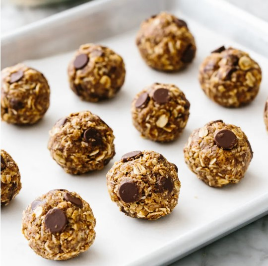

Poison's Energy Balls

"They're a great quick snack!" -Poison
Peanut butter and maple syrup are the glue that keep these puppies together.
Ingredients:
- 1 cup rolled oats
- 1/2 cup chocolate chips
- 1/2 cup ground flax seeds
- 1/2 cup peanut butter
- 1/3 cup maple syrup
- 1 tsp vanilla extract
Steps:
- In a large bowl, mix the dry ingredients (rolled oats, chocolate chips and flax seeds). Set aside.
- In a smaller bowl, mix the peanut butter, maple syrup and vanilla extract until homogeonous.
- Pour the wet ingredients into the dry. Using a spatula, mix thoroughtly.
- With your hands, form the mixture into 12 balls. Place them in a single layer in a sealable container and place in the fridge to set. The balls will keep in the fridge for about a week, or longer in the freezer.